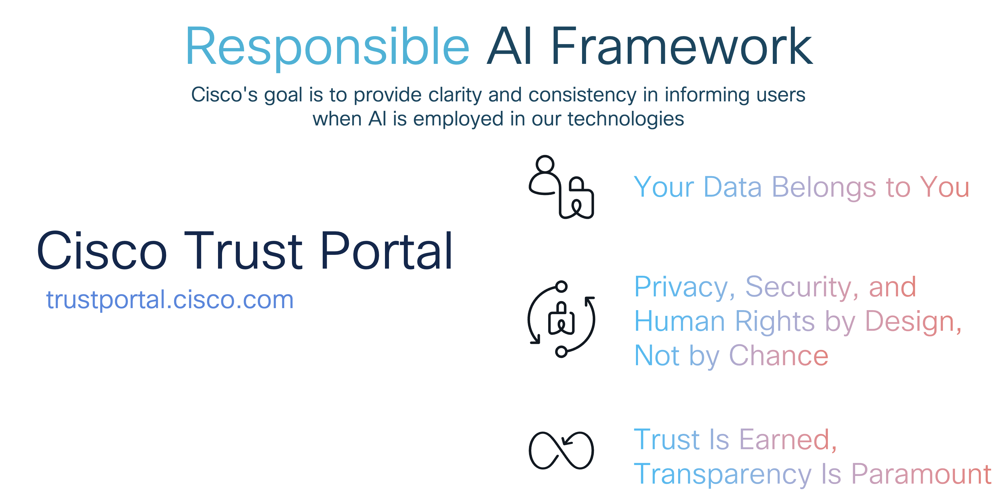
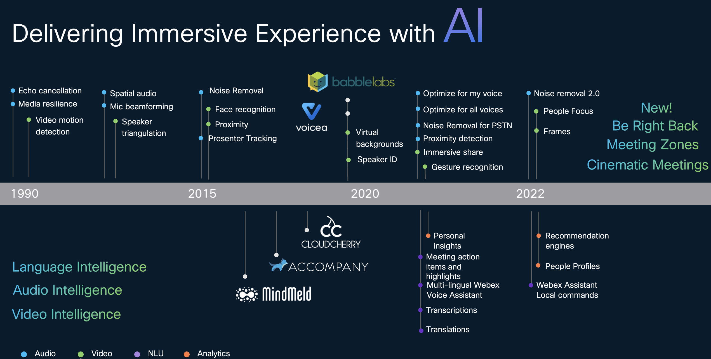
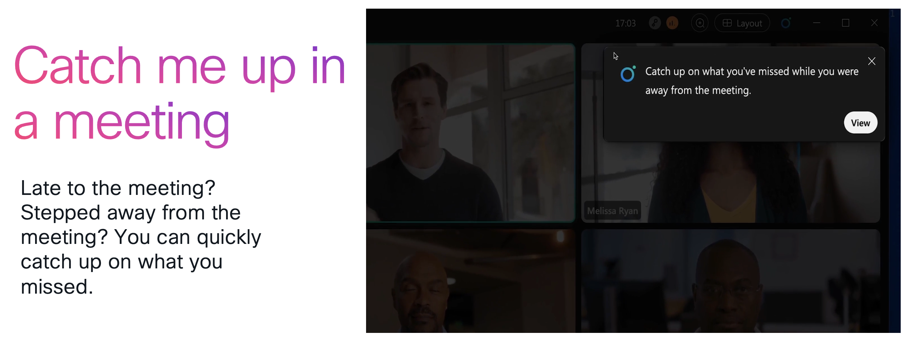
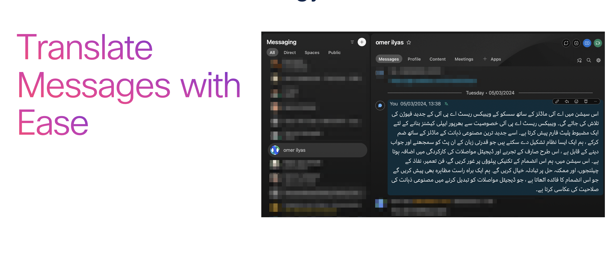
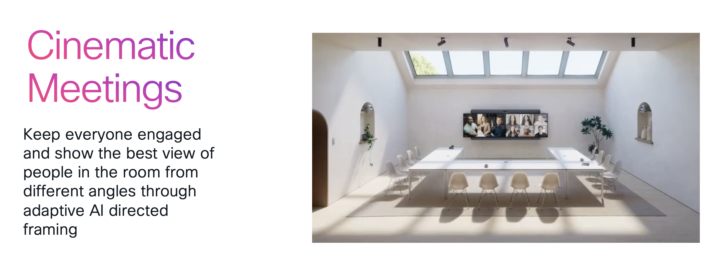
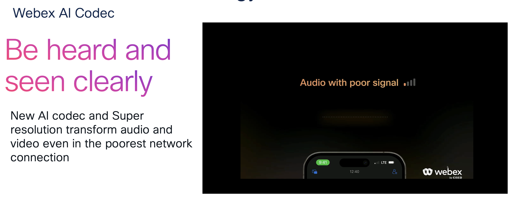
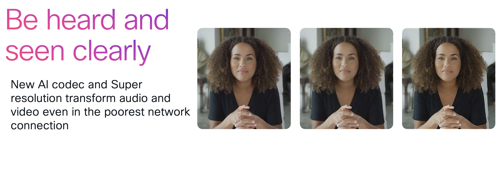
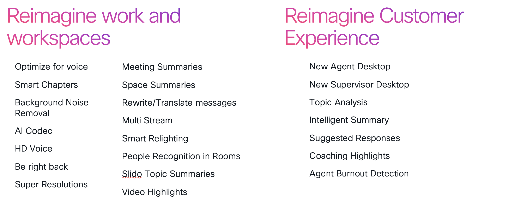

Overview - Understanding AI and Its Integration with Webex
Artificial Intelligence (AI) is transforming the way we work, enabling innovative solutions and enhancing productivity. Cisco is committed to innovating responsibly, with responsible AI being non-negotiable. Our approach is grounded in the principles of transparency, fairness, accountability, reliability, security, and privacy. Cisco's Responsible AI Framework, aligned with the AI Risk Management Framework, ensures that all AI initiatives undergo rigorous assessments, particularly around privacy.
Cisco's AI strategy emphasizes building ethical and trustworthy systems that mitigate risks while enhancing innovation across products and services.
Please refer to the below info for more detailed insights:
- Responsible AI is built on a foundation of privacy
- Cisco's Responsible Artificial Intelligence Principles
- Cisco's Responsible Approach to Governing Artificial Intelligence
- Cisco's Responsible Artificial Intelligence Framework

The Evolution of AI at Cisco
At Cisco, innovation is woven into the fabric of everything we do. We've been at the forefront of AI development long before it became a buzzword. Our journey spans decades, from early developments in audio and video intelligence, like echo cancellation, media resilience, to recent breakthroughs like noise removal, face recognition, and immersive experiences, just to name a few. We continue to push boundaries, enhancing AI across multiple domains to deliver immersive and intelligent experiences. Innovation in AI isn't just a trend for us—it's a longstanding commitment to excellence and progress.

What we want everyone to understand is that AI is the core fabric that powers our platforms, enabling reimagining of work, workspaces, and customer experiences. Whether through the Webex Suite, advanced devices, or contact center solutions, AI drives the seamless, intelligent, and immersive experiences that define modern collaboration. Cisco's AI-powered Webex platform is designed to transform the way we work, ensuring that every interaction is smarter, more efficient, and more personalized.
In recent years, we've expanded our platform with several new AI capabilities. Here are a few highlights:





Summary of newly integrated AI features within our platform

REMINDER: Our product team is hosting AI sessions. Please review the agenda and join the ones that interest you.
Lab Guide Overview
In this lab guide you will go through the fundamental concepts of AI, various techniques, and how AI can be integrated with Webex to create efficient workflows.
Upon completion of this lab you will be able to
- Understand the basics of AI and its applications
- Learn about embedding techniques
- Explore vector databases
- Gain insights into Generative AI models
- Familiarize yourself with different AI frameworks
- Integrate AI with Webex to create seamless workflows
- Develop hands-on skills through practical exercises
- Understand Fine-tuning and Quantization
- Deploy Fine Tuning techniques
Prerequisites
- Basic understanding of AI concepts is helpful but not required.
Disclaimer
The lab design and configuration examples provided are for reference purposes only. This is a sample deployment, and not all recommended features are used or enabled optimally. For design-related questions, please contact your representative at Cisco or a Cisco partner or TME team.
Lab Overview - Enabling Hybrid Work with ThousandEyes
- Lab Login and Setup
- Quick AI Overview
- Configure and Access the Lab Systems
- Deploy AI Models and Techniques
- Set up and Configure AI Monitoring
- Review AI Integration with Webex
- Analyze Data and Optimize Workflows
- Wrap up and End the Lab
Let's get started! Click on Task 1 - Google Collab- Accessing Google Collab and creating account.